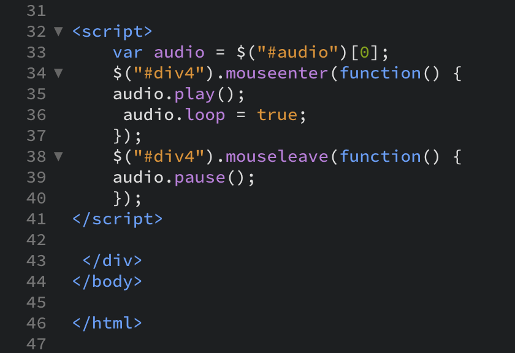

net.art series
Procedural Section
Page 3

After adding in my backgrounds and setting their sizing, it was time to introduce javascript into my document, specifically for audio and user interaction.
I first tried using the js process that my professor demonstrated, but I did not like how I was unable to achieve a true auto play function in some browsers.
With a lot more research about javascript functions and a lot of trial and error, I finally was able to get as close of an autoplay experience as possible with incorporating the mouseenter and mouseleave functions with a set <div> across the entire window.